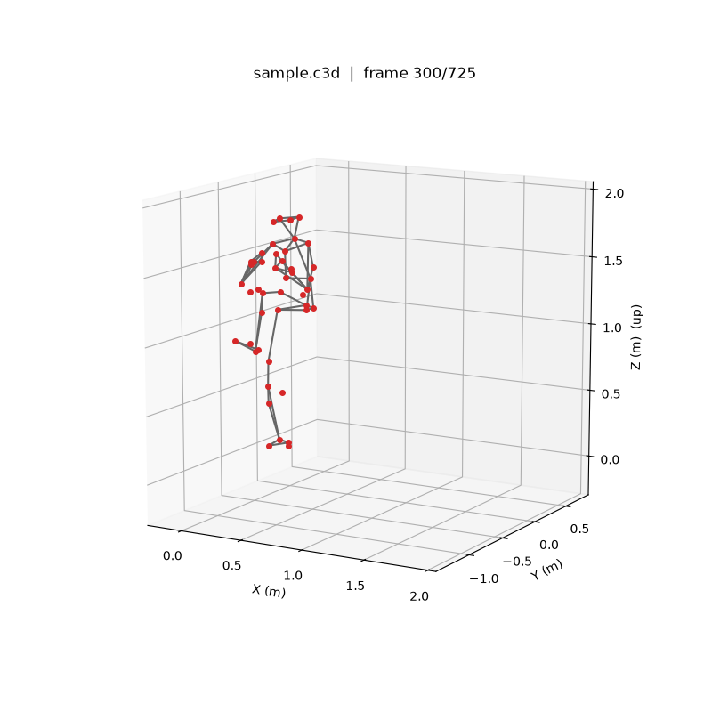
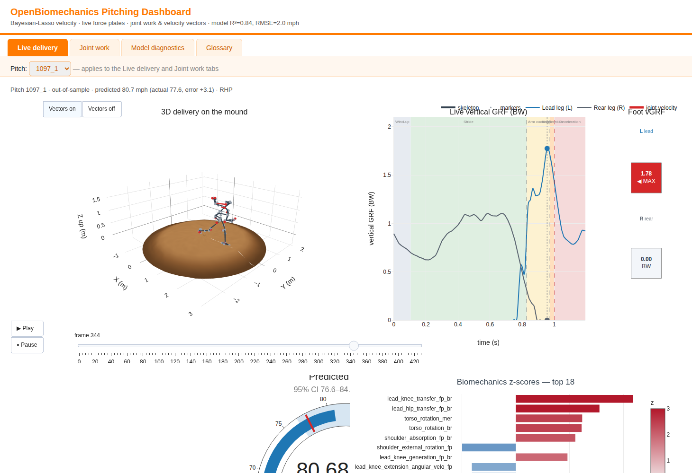
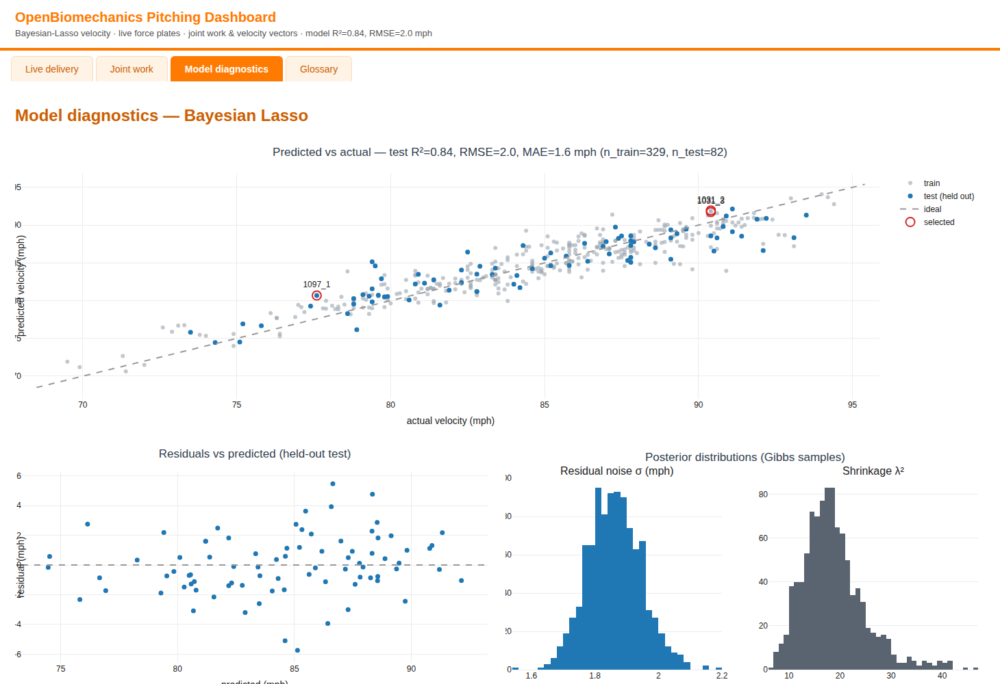
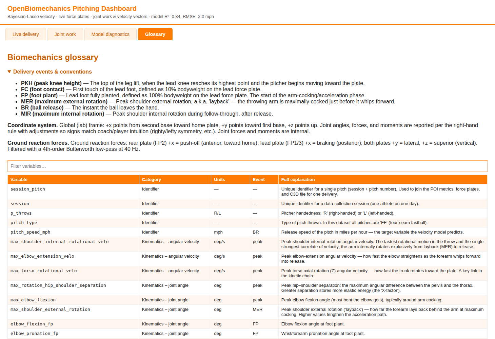

The question
Velocity is the easy part — where it comes from is not
The Driveline OpenBiomechanics Project publishes full marker-based motion capture of baseball pitching: C3D files at 360 Hz, force plates under both feet at roughly 1080 Hz, joint energy flow, and a table of 76 summary metrics taken at points of interest in the delivery.
Two pitchers can throw the same 92 mph and get there in completely different ways: one drives from the ground through the trunk, the other cranks on the arm and pays for it in elbow valgus torque. This project reads the raw capture, predicts release velocity from the mechanics, and then separates how much a pitcher throws from how he throws it.

The dashboard
Five tabs over one pitch at a time
Everything below is reachable from a single pitch picker: choose a pitcher, choose one of that pitcher's pitches, and every panel re-reads against it.
-
Live delivery
A Plotly animation of the 3D pose on a dirt mound, with a play button, a frame slider, and an optional joint-velocity vector on every joint. Scrubbing drives everything else on the tab.
-
Ground reaction force, in sync
Lead and rear leg force traces move with the animation, with the delivery phases shaded — wind-up, stride, arm cocking, acceleration, deceleration — and two foot squares that flash red at each foot's peak.
-
Joint work
The body at ball release, colored by the energy each joint generated against the dataset average, warm for more and cool for less, alongside work accumulated through the delivery and its z-scores.
-
Efficiency
A single 0 to 100 percentile score for how much of the velocity is bought with the trunk and legs rather than the elbow, with a signed contribution breakdown behind it.
-
Model diagnostics
Predicted against actual for train and test, residuals, posterior coefficients with 95 percent credible intervals, and the posteriors of the noise and shrinkage parameters.
-
Glossary
A searchable table defining all 81 biomechanics variables, with units and the event each is measured at, so no panel needs a translator.



Predicting release velocity
A Bayesian Lasso, written from scratch
The velocity model regresses pitch_speed_mph on all 76 point-of-interest
metrics at once. Those metrics are wide and heavily correlated, which is exactly where
ordinary least squares falls apart, so the fit uses the Bayesian Lasso of Park and
Casella (2008), implemented directly in NumPy with a Gibbs sampler.
Mixing τj² ~ Exponential(λ² / 2)
Marginal integrating out τj² recovers the double-exponential (Lasso) prior
Shrinkage Gamma hyper-prior on λ², so the data choose how hard to shrink
Sampler every full conditional stays Gaussian, inverse-Gaussian, or gamma
Writing the scale-mixture representation out this way is what keeps the sampler clean: the Laplace prior that shrinks weak predictors toward zero is recovered by marginalising, while each Gibbs step remains a closed-form draw. The payoff over a point-estimate Lasso is that every coefficient arrives with a posterior, so the diagnostics tab can show which mechanics actually carry the prediction and which are indistinguishable from zero.
| Result | Out of sample |
|---|---|
| R² | ≈ 0.8 on a held-out test set |
| RMSE | ≈ 2 mph |
| Predictors | 76 point-of-interest metrics, shrunk by the model rather than pre-selected by hand |
| Per pitch | Posterior mean and credible interval, plus z-scores of every metric against the dataset |
Mechanical efficiency
Velocity bought from the ground, or bought from the elbow
The efficiency model scores the trade-off directly: how much mechanical energy comes from the big, durable engines — torso, hips, knees — relative to the load placed on the fragile throwing elbow.
Cost standardized elbow varus moment, the medial-elbow and UCL load
Raw index raw = drive_z − elbow_load_z
Score raw mapped to its percentile within the dataset, 0 to 100
The score is high when a pitcher drives hard with the trunk and legs and spares the arm. Mapping to a percentile is what makes it readable across pitchers: an 82 means something on its own, where a raw z-difference does not. The tab also returns a signed per-metric breakdown, so the score is never a black box — it names which inputs pushed it up and which dragged it down.
Where the numbers come from
Four signals, one clock
Force plates, joint energy, marker trajectories, and the summary metrics arrive as separate archives at different sampling rates. They share the capture clock, so the dashboard aligns them to the pose by interpolating on time rather than assuming frames line up.
| Signal | Used for |
|---|---|
| C3D markers | The 3D pose and skeleton at 360 Hz, plus the mound geometry inferred from where the feet travel |
| Force plates | Lead and rear vertical force and magnitude, delivery phase boundaries, per-foot peaks |
| Energy flow | Net energy generated per joint, cumulative through the delivery and at release |
| Landmarks | Joint-centre velocity vectors, finite-differenced for the vector overlay |
| POI metrics | The 76 model features, per-pitch z-scores, and every input to the efficiency score |
The dirt mound under the pitcher is not a fixed prop. Its centre, radius, ground level, and downhill heading toward home plate are all estimated from the foot markers, so the dirt sits correctly under any pitch regardless of how the capture was oriented.
How it runs
No download step, no checked-in data
The dataset is licensed non-commercially and is not redistributed here, so nothing is vendored. Every table, C3D file, and full-signal archive is fetched on demand, with two interchangeable backends behind one interface.
Source on demand
Files come from the OpenBiomechanics GitHub mirror by default, or from a Hugging Face dataset repository when one is configured — the same call either way, with transient rate-limit and server errors retried rather than surfaced.
Fit on startup
The Space trains the Bayesian Lasso when it boots and holds out a test set, so the diagnostics on screen describe the model actually making the predictions.
Serve as a Gradio app
A two-step picker — pitcher, then pitch — keeps the whole dataset browsable without rebuilding anything, rather than baking in a fixed handful of deliveries.
Or render a static file
The same panels build into a single self-contained HTML dashboard, optionally with Plotly embedded for fully offline use, which is what the sample linked above is.
-
Modules, not a monolith
Force plates, joint kinetics, efficiency, the glossary, and the velocity model are each importable on their own, so the analysis is usable from a notebook without touching the dashboard.
-
Continuous integration
GitHub Actions runs the test suite on Python 3.10 through 3.12 and lints with ruff on every push and pull request.
-
Colour carries data
The shell is themed; the plots are deliberately neutral, so every colour on a figure means something rather than being branding.
Pick any pitcher in the dataset and read their delivery.
Launch the dashboard